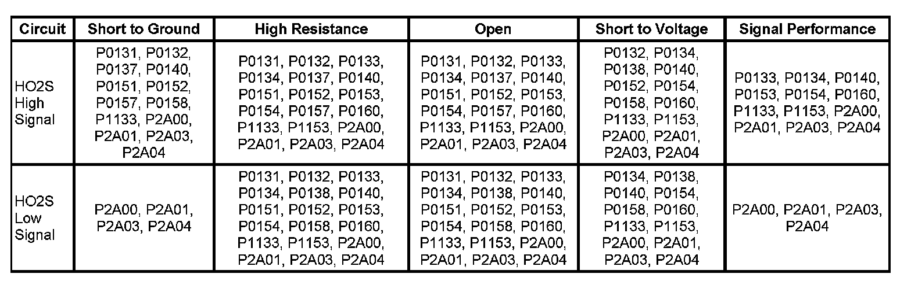
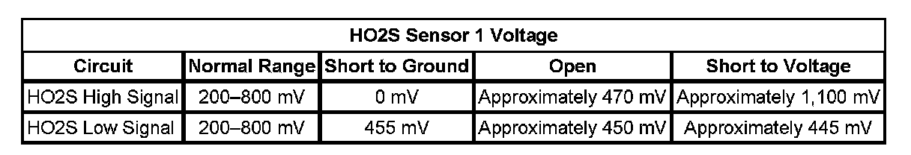

P0131
DTC P0131, P0132, P0137, or P0138
DTC DESCRIPTORS
DTC P0131
HO2S Circuit Low Voltage Bank 1 Sensor 1
DTC P0132
HO2S Circuit High Voltage Bank 1 Sensor 1
DTC P0137
HO2S Circuit Low Voltage Bank 1 Sensor 2
DTC P0138
HO2S Circuit High Voltage Bank 1 Sensor 2
DIAGNOSTIC FAULT INFORMATION

Perform the Diagnostic System Check - Vehicle prior to using this diagnostic procedure. Initial Inspection and Diagnostic Overview
TYPICAL SCAN TOOL DATA
HO2S Sensor 1 Voltage:

CIRCUIT/SYSTEM DESCRIPTION
Heated oxygen sensors (HO2S) are used for fuel control and post catalyst monitoring. Each HO2S compares the oxygen content of the surrounding air with the oxygen content in the exhaust stream. The HO2S must reach operating temperature to provide an accurate voltage signal. Heating elements inside the HO2S minimize the time required for the sensors to reach operating temperature. The control module supplies the HO2S with a reference, or bias, voltage of about 450 mV. When the engine is first started, the control module operates in Open Loop, ignoring the HO2S voltage signal. Once the HO2S reaches operating temperature and Closed Loop is achieved, the HO2S generates a voltage within a range of 0-1,000 mV that fluctuates above and below bias voltage. High HO2S voltage indicates a rich exhaust stream. Low HO2S voltage indicates a lean exhaust stream.
CONDITIONS FOR RUNNING THE DTC
P0131
- DTCs P0068, P0101, P0102, P0103, P0106, P0107, P0108, P0112, P0113, P0116, P0117, P0118, P0120, P0121, P0122, P0123, P0128, P0201, P0202, P0203, P0204, P0205, P0206, P0207, P0208, P0220, P0222, P0223, P0442, P0443, P0446, P0449, P0455, P0496, P1516, P2101, P2119, P2135, P2176 are not set.
- The Loop Status parameter is Closed.
- The Ignition 1 Signal parameter is between 10-18 volts.
- The fuel alcohol content parameter is less than 87 percent.
- The Fuel Level Sensor parameter is more than 10 percent.
- The Throttle Position (TP) Indicated Angle parameter is between 3-70 percent.
- DTC P0131 runs continuously when the above conditions are met for 2 seconds.
P0132
- DTCs P0068, P0101, P0102, P0103, P0106, P0107, P0108, P0112, P0113, P0116, P0117, P0118, P0120, P0121, P0122, P0123, P0128, P0201, P0202, P0203, P0204, P0205, P0206, P0207, P0208, P0220, P0222, P0223, P0442, P0443, P0446, P0449, P0455, P0496, P1516, P2101, P2119, P2135, P2176 are not set.
- The Loop Status parameter is Closed.
- The Ignition 1 Signal parameter is between 10-18 volts.
- The fuel alcohol content parameter is less than 87 percent.
- The Fuel Level Sensor parameter is more than 10 percent.
- The Throttle Position (TP) Sensor parameter is between 3-70 percent.
- DTC P0132 runs continuously when the above conditions are met for 2 seconds.
P0137
- DTCs P0068, P0101, P0102, P0103, P0106, P0107, P0108, P0112, P0113, P0116, P0117, P0118, P0120, P0121, P0122, P0123, P0128, P0201, P0202, P0203, P0204, P0205, P0206, P0207, P0208, P0220, P0222, P0223, P0442, P0443, P0446, P0449, P0455, P0496, P1516, P2101, P2119, P2135, P2176 are not set.
- The Loop Status parameter is Closed.
- The Ignition 1 Signal parameter is between 10-18 volts.
- The Fuel Alcohol Content parameter is less than 87 percent.
- The Fuel Level Sensor parameter is more than 10 percent.
- The TP Sensor parameter is between 3-70 percent.
- DTC P0137 runs the lean test continuously when the above conditions are met for 2 seconds.
P0138
- DTCs P0068, P0101, P0102, P0103, P0106, P0107, P0108, P0112, P0113, P0116, P0117, P0118, P0120, P0121, P0122, P0123, P0128, P0201, P0202, P0203, P0204, P0205, P0206, P0207, P0208, P0220, P0222, P0223, P0442, P0443, P0446, P0449, P0455, P0496, P1516, P2101, P2119, P2135, P2176 are not set.
- The Loop Status parameter is Closed.
- The Ignition 1 Signal parameter is between 10-18 volts.
- The Fuel Alcohol Content parameter is less than 87 percent.
- The Fuel Level Sensor parameter is more than 10 percent.
- The TP Sensor parameter is between 3-70 percent.
- DTC P0138 runs the rich test continuously when the above conditions are met for 2 seconds.
CONDITIONS FOR SETTING THE DTC
P0131
- The control module detects that the sensor Voltage parameter is less than 80 mV.
- DTC P0131 sets within 100 seconds during the lean test when the above condition is met.
P0132
- The control module detects that the sensor parameter is more than 1,050 mV.
- DTC P0132 sets within 15 seconds during the rich test when the above condition is met.
P0137
- The control module detects that the sensor voltage parameter is less than 80 mV.
- DTC P0137 sets within 100 seconds during the lean test when the above condition is met.
P0138
- The control module detects that the sensor voltage parameter is more than 950 mV.
- DTC P0138 sets within 100 seconds during the rich test when the above condition is met.
ACTION TAKEN WHEN THE DTC SETS
DTC P0131, P0132, P0137, or P0138 are Type B DTCs.
CONDITIONS FOR CLEARING THE MIL/DTC
DTC P0131, P0132, P0137, or P0138 are Type B DTCs.
CIRCUIT/SYSTEM VERIFICATION
- If any HO2S heater DTCs are set, perform those diagnostics first.
- Allow the engine to reach operating temperature.
- Engine running, observe the affected HO2S parameter with a scan tool.
- The pre-catalyst oxygen sensors value should vary from below 200 mV to above 800 mV and respond to fueling changes.
- The post-catalyst oxygen sensors value should change more than 200 mV when the throttle is quickly cycled 3 times from closed to wide open and back to closed after running the engine at 1,500 RPM for 30 seconds.
- The affected HO2S may be damaged due to contamination. Prior to replacing the affected HO2S, inspect for the following sources of contamination:
- NOTE: Refer to Silicon Contamination of Heated Oxygen Sensors Notice
A silicon contaminated HO2S
- Fuel contamination-Refer to Alcohol/Contaminants-in-Fuel Diagnosis. Alcohol/Contaminants-in-Fuel Diagnosis
- Engine oil consumption-Refer to Oil Consumption Diagnosis. Component Tests and General Diagnostics
- Engine coolant consumption-Refer to Loss of Coolant. Loss of Coolant
CIRCUIT/SYSTEM TESTING
1. IMPORTANT: All modules must be powered down or misdiagnosis may result.
Ignition OFF, disconnect the scan tool and wait 60 seconds to ensure all modules are powered down.
2. Ignition OFF, disconnect the harness connector at the appropriate HO2S.
3. Ignition OFF, measure for less than 5 ohms resistance between the appropriate HO2S low signal circuit terminal A and ground.
- If more than the specified range, test the appropriate HO2S low signal circuit for an open/high resistance. If the circuit tests normal, replace the ECM.
4. Ignition ON, verify the appropriate scan tool HO2S parameter is approximately 450 mV.
- If more than the specified value, test the appropriate HO2S high signal circuit for a short to voltage. If the circuit tests normal, replace the ECM.
- If less than the specified value, test the appropriate HO2S high signal circuit for a short to ground. If the circuit tests normal, replace the ECM.
5. Ignition ON, install a 3A fused jumper wire at the HO2S high signal circuit terminal B. Toggle the jumper wire between the HO2S low signal circuit terminal A and battery voltage. Verify the appropriate scan tool HO2S parameter toggles between 0 mV and approximately 1,000 mV.
- If the appropriate scan tool HO2S parameter does not toggle correctly, test the HO2S high signal circuit for an open/high resistance. If the circuits test normal, replace the ECM.
6. If all circuits test normal, replace the appropriate HO2S.
REPAIR INSTRUCTIONS
NOTE: Refer to Heated Oxygen Sensor Resistance Learn Reset Notice.
IMPORTANT: For DTC P0131 and P0132, in order to ensure that the performance of the catalyst has not been affected by the fault that set this DTC, operate the vehicle within the conditions for running and setting DTC P0420 and verify that P0420 runs and passes. Refer to DTC P0420 or P0430. P0420 P0430
Perform the Diagnostic Repair Verification after completing the diagnostic procedure.
- Heated Oxygen Sensor Replacement - Bank 1 Sensor 1 (1500 Series) Heated Oxygen Sensor Replacement - Bank 1 Sensor 1 (2500 Series)
- Heated Oxygen Sensor Replacement - Bank 1 Sensor 2 (1500 Series) Heated Oxygen Sensor Replacement - Bank 1 Sensor 2 (2500 Series)
- Control Module References for replacement, setup, and programming. Verification Tests